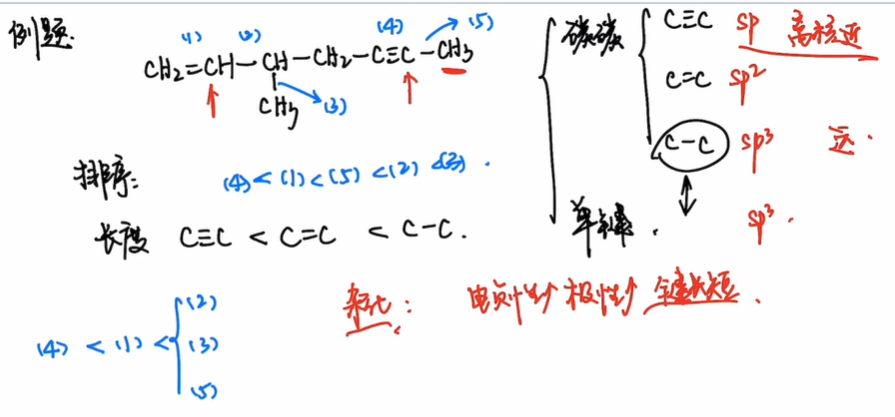
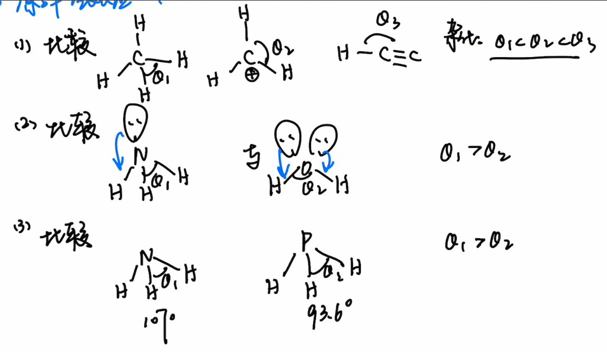
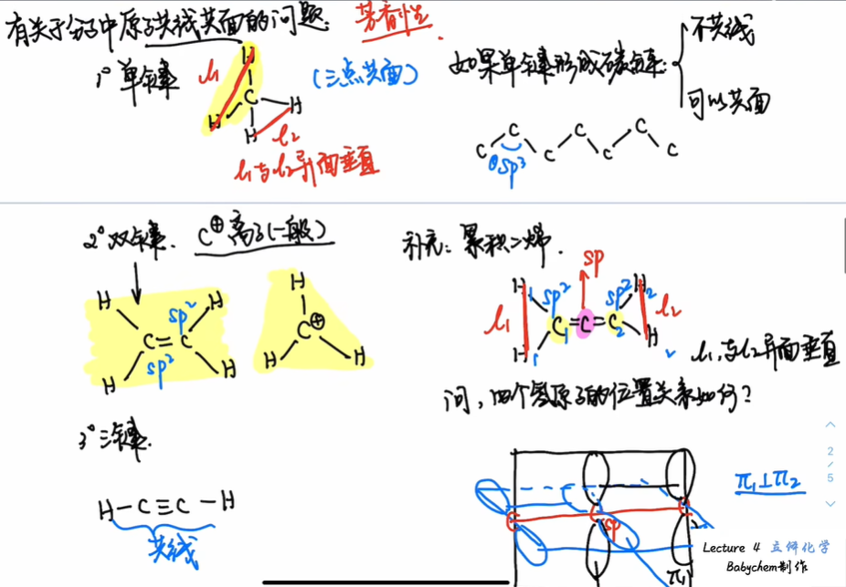

<meta data-freshmark-page data-title="基础有机化学：立体化学概述 — Freshmark" data-description="本文介绍立体化学的基本研究对象，梳理分子的构成、构造、构型与构象之间的层级关系，并从键长、键角、中心原子杂化和孤对电子等方面整理分子共线与共面的基础判断方法。" data-canonical="https://example.com/posts/chemistry/babychem/overview-of-stereochemistry/" data-article="true"><main><header class="container article-header"><a class="back-link" href="/">← Back to all writing</a><h1>基础有机化学：立体化学概述</h1><p class="article-dek">本文介绍立体化学的基本研究对象，梳理分子的构成、构造、构型与构象之间的层级关系，并从键长、键角、中心原子杂化和孤对电子等方面整理分子共线与共面的基础判断方法。</p><div class="article-meta"><time datetime="2026-07-10">July 10, 2026</time><span>1 min read</span><span>化学竞赛 · 有机化学</span><a href="index.md" download>Download Markdown</a></div></header><div class="article-wrap"><aside class="toc"><p>On this page</p><a href="#">引言</a><a href="#">预备:键参数</a><a href="#">键长</a><a href="#">键角</a><a href="#">有关于分子中原子共线共面的问题</a></aside><article class="prose"><h1 id="">引言</h1>
<p>怎样&quot;确定&quot;一个分子?</p>
<p>通过分子式\(\ce{C3H6OCl2}\)足矣吗?显然不,一个分子式可以对应若干种同分异构体.</p>
<p>相同分子式,可以通过不同键联方式得到不同异构体</p>
<p>相同键联方式,可以通过基团不同的排序得到不同异构体</p>
<p>相同排序,可以通过单键旋转得到不同异构体.</p>
<p>小结:</p>
<p>立体化学所研究的层级,是<strong>构型</strong>与<strong>构象</strong></p>
<ul><li>不同原子<strong>构成</strong>分子,确定唯一的分子式</li><li>相同的分子式,有不同的<strong>构造</strong></li><li>相同的构造,有不同的<strong>构型</strong></li><li>相同的构型,有不同的<strong>构象</strong></li><li>尺度:构成&gt;构造&gt;构型&gt;构象</li></ul>
<h1 id="">预备:键参数</h1>
<p>立体化学所研究的键参数:</p>
<ul><li>键长</li><li>键角</li></ul>
<h2 id="">键长</h2>
<p></p>
<p>结论</p>
<ol><li>电负性越大,键的极性越大,键长越短</li><li>不同杂化对应键长:\(sp\lt sp^2\lt sp^3\)</li><li>原子半径与键长正相关</li></ol>
<h2 id="">键角</h2>
<p></p>
<p>比较优先级:</p>
<ol><li>中心原子杂化</li><li>孤对电子</li><li>中心原子电负性</li></ol>
<h3 id="">有关于分子中原子共线共面的问题</h3>
<p></p></article></div></main>